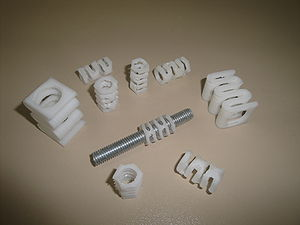
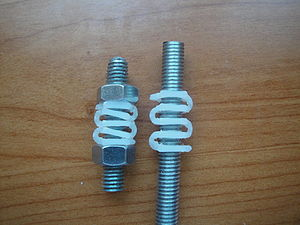
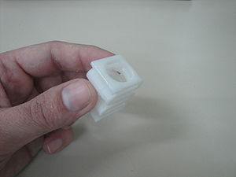
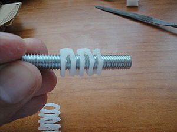
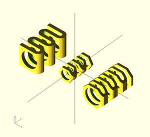

(click para ampliar)
Contenido
[ocultar]Introducción
Muelle imprimible y parametrizado. El diseño es muy simple: una tira de plástico con dobleces y un taladro central. La sección exterior del muelle puede ser cuadrada, hexagonal u octogonal.
Parámetros
- Sección: cuadrada, hexagonal, octogonal. Hay un módulo Openscad para cada uno
- fid (Fold inner diameter): Diámetro interno de los dobleces
- th (thicnkess): Grosor de la tira
- Folds: Número de dobleces
- Drill: Diámetro del taladro interno
Motivación
He creado este muelle para usarlo en sustitución de los muelles del eje z de la Prusa. Me cuesta mucho conseguirlos por lo que pensé en hacerme los míos propios. Luego los hice paramétricos y este es el resultado :-)
Descarga
| spring.scad | Fuentes del muelle, en OpenScad |
| spring.stl | Ejemplo de muelle 1: Es el que uso en la Prusa, con sección hexagonal y taladro de 8mm |
| spring2.stl | Ejemplo de muelle 2: Sección cuadrada y taladro interno de 14mm |
| spring3.stl | Ejemplo de muelle 3: Sección octogonal y taladro interno de 14mm |
Vídeo
|
|


Fotos
| Álbum de fotos completo |
|---|
|  (click para ampliar) |
 (click para ampliar) |
|  (click para ampliar) |
 (click para ampliar) |


Repositorio
- Repositorio SVN: http://svn.iearobotics.com/3D_objects/spring/
Autor
Licencia
| |
Enlaces
Noticias
- 12/Abril/2012: Primera versión de esta página